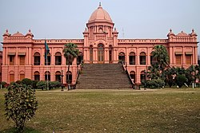
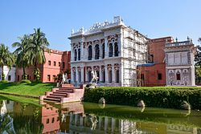
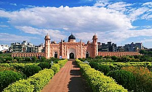
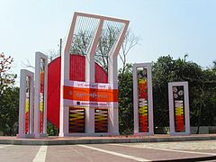
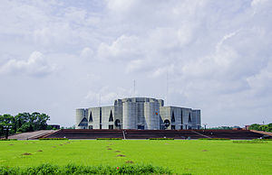
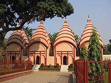

ঢাকা/DHAKA
আহসান মঞ্জিল

আহসান মঞ্জিল পুরান ঢাকার ইসলামপুরের কুমারটুলী এলাকায় বুড়িগঙ্গা নদীর তীরে অবস্থিত। এটি
পূর্বে ছিল ঢাকার নবাবদের আবাসিক প্রাসাদ ও জমিদারীর সদর কাচারি। বর্তমানে এটি জাদুঘর হিসাবে
ব্যবহৃত হচ্ছে। এর প্রতিষ্ঠাতা নওয়াব আবদুল গনি।তিনি তার পুত্র খাজা আহসানুল্লাহ-র নামানুসারে এর
নামকরণ করেন।১৮৫৯ খ্রিষ্টাব্দে আহসান মঞ্জিলের নির্মাণ কাজ শুরু হয়ে ১৮৭২ খ্রিষ্টাব্দে সমাপ্ত হয়।
১৯০৬ খ্রিষ্টাব্দে এখানে এক অনুষ্ঠিত বৈঠকে মুসলিম লীগ প্রতিষ্ঠার সিদ্ধান্ত হয়। আহসান মঞ্জিল
কয়েকবার সংস্কার করা হয়েছে। সর্বশেষ সংস্কার করা হয়েছে অতি সম্প্রতি। এখন এটি বাংলাদেশ
জাতীয় জাদুঘর কর্তৃক পরিচালিত একটি জাদুঘর।
সোনারগাঁও

সোনারগাঁও ছিল বাংলার মুসলিম শাসকদের অধীনে পূর্ববঙ্গের একটি প্রশাসনিক কেন্দ্র। এটি বর্তমানে
নারায়ণগঞ্জ জেলার একটি উপজেলা। এর অবস্থান ঢাকা থেকে ২৭ কিলোমিটার দক্ষিণ-পূর্বে। মধ্যযুগীয়
নগরটির যথার্থ অবস্থান নির্দেশ করা কঠিন। বিক্ষিপ্ত নিদর্শনাদি থেকে প্রতীয়মান হয় যে, এটি পূর্বে মেঘনা,
পশ্চিমে শীতলক্ষ্যা, দক্ষিণে ধলেশ্বরী ও উত্তরে ব্রহ্মপুত্র নদ দ্বারা বেষ্টিত একটি বিস্তৃত জনপদ ছিল।
লালবাগের কেল্লা

লালবাগের কেল্লা (কিলা আওরঙ্গবাদ) ঢাকার দক্ষিণ-পশ্চিমাঞ্চলে বুড়িগঙ্গা নদীর তীরে অবস্থিত একটি
অসমাপ্ত মুঘল দুর্গ।[১] এটির নির্মাণকাজ শুরু হয়েছিল ১৬৭৮ সালে, মুঘল সুবাদার মুহাম্মদ আজম
শাহ্ কর্তৃক, যিনি ছিলেন সম্রাট আওরঙ্গজেবের পুত্র এবং পরবর্তীতে নিজেও সম্রাট পদপ্রাপ্ত হয়েছিলেন।
তার উত্তরসুরি, মুঘল সুবাদার শায়েস্তা খাঁ ১৬৮০ সালে নির্মাণকাজ পুনরায় শুরু করেন, কিন্তু শেষ করেননি।
কেন্দ্রীয় শহীদ মিনার

কেন্দ্রীয় শহীদ মিনার ১৯৫২ খ্রিষ্টাব্দের ভাষা আন্দোলনের স্মৃতিসৌধ। এটি বাংলাদেশের রাজধানী ঢাকার
কেন্দ্রস্থলে ঢাকা মেডিক্যাল কলেজের বহিপ্রাঙ্গনে অবস্থিত। প্রতি বছর ২১শে ফেব্রুয়ারি তারিখে এখানে
হাজার হাজার মানুষ উপস্থিত হয়ে ভাষা আন্দোলনের শহীদদের প্রতি শ্রদ্ধার্ঘ্য নিবেদন করে। এটি ঢাকার
কেন্দ্রস্থলে অবস্থিত অন্যতম পর্যটন বিন্দু।
জাতীয় সংসদ ভবন

জাতীয় সংসদ ভবন বাংলাদেশের জাতীয় সংসদের প্রধান ভবন। এটি ঢাকার শেরেবাংলা নগর এলাকায় অবস্থিত।
প্রখ্যাত মার্কিন স্থপতি লুই আই কান এটির মূল স্থপতি।
ঢাকেশ্বরী মন্দির

ঢাকেশ্বরী মন্দির বাংলাদেশের রাজধানী ঢাকায় অবস্থিত একটি মন্দির। এই মন্দিরটি বাংলাদেশের জাতীয় মন্দির
হিসেবে পরিচিতি লাভ করেছে। মন্দিরে প্রতি রবিবার অনুষ্ঠান করা হয়। এটি একটি সতীপীঠ। পৌরাণিক কাহিনী
দক্ষযজ্ঞে সতী দেহত্যাগ করলে মহাদেব মৃতদেহ স্কন্ধে নিয়ে উন্মত্তবৎ নৃত্য করতে থাকেন, বিষ্ণু সেই দেহ
চক্রদ্বারা ছেদন করে ৷ সতীর মৃতদেহের খন্ডাংশ বিভিন্ন স্থানে পতিত হয়৷ এই স্থানগুলি দেবীর পীঠস্থান নামে
পরিচিত।
Add more historical place details soon